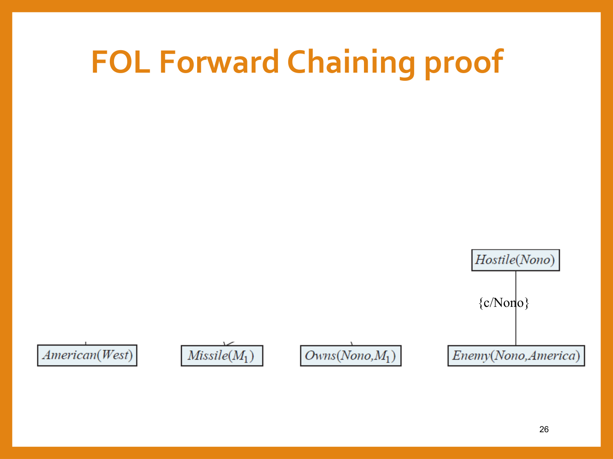
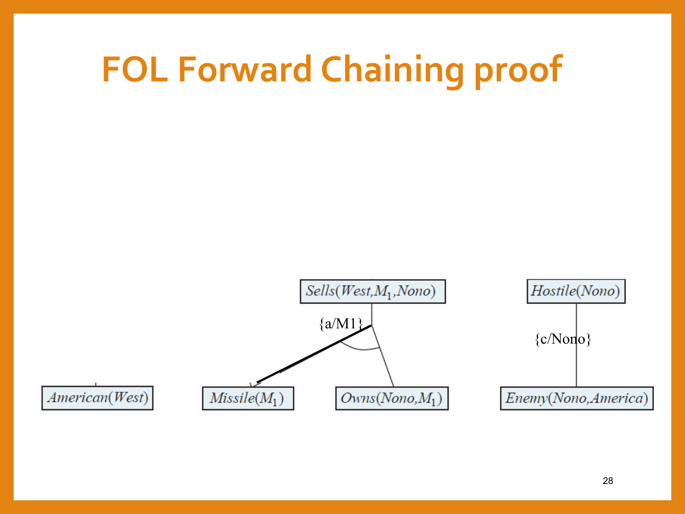
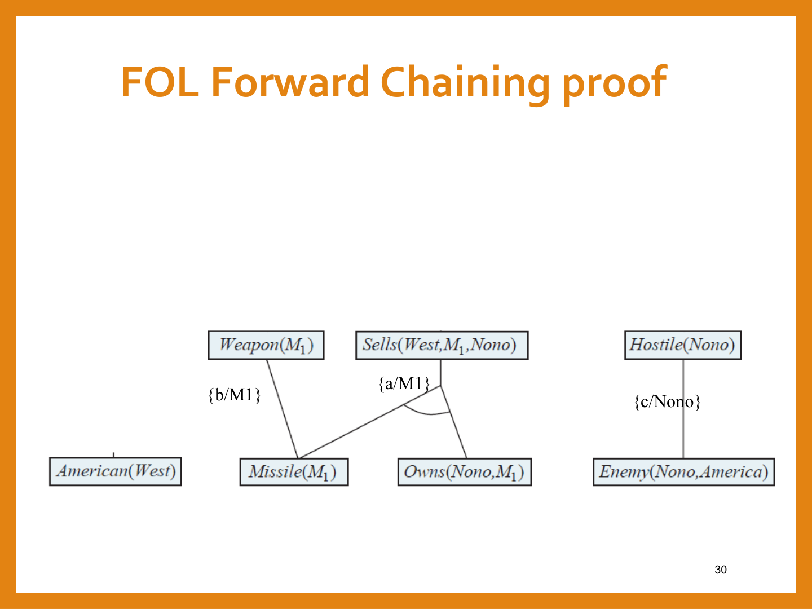
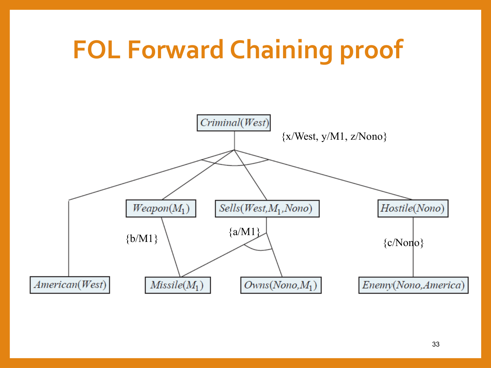
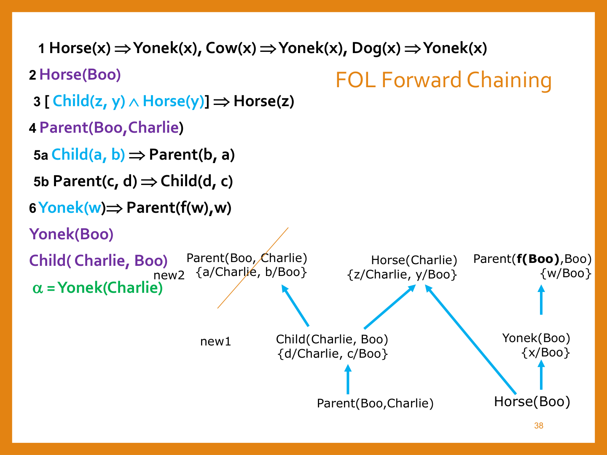
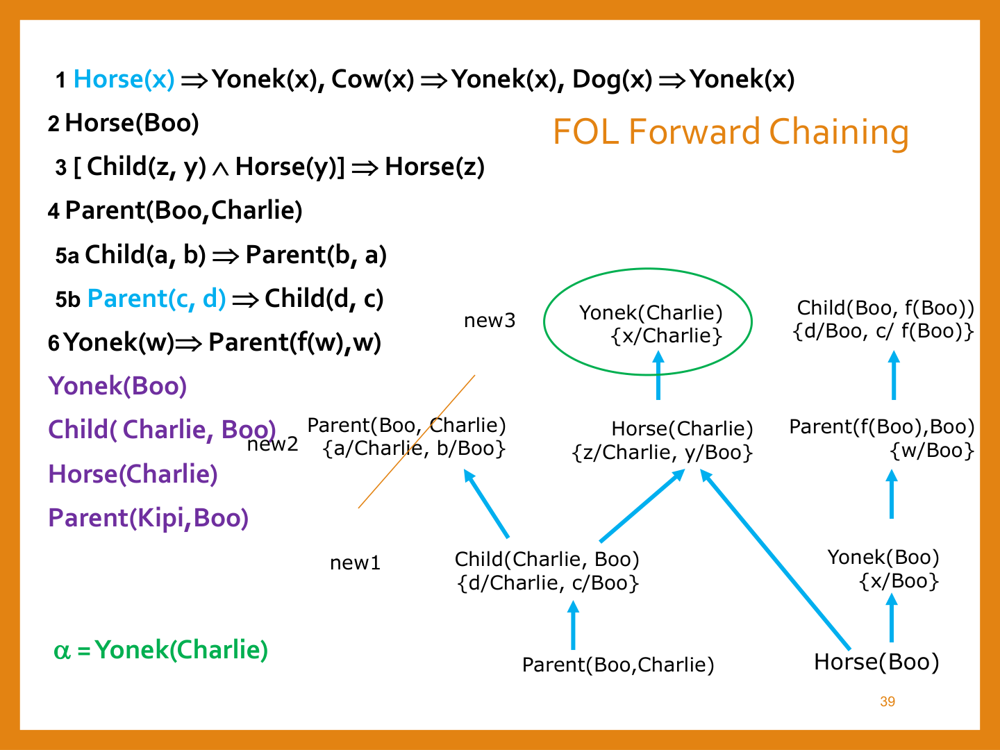
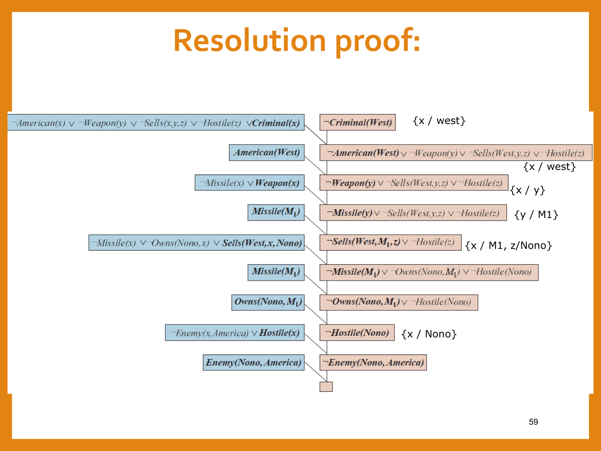

היסק בלוגיקה מסדר ראשון — יוניפיקציה, שרשור ורזולוציה
⏱ זמן משוער: 70 דק'
0. האינטואיציה — מלוגיקה שיודעת לדבר, ללוגיקה שיודעת להוכיח
בפרק הקודם למדנו איך לכתוב ידע ב-FOL — פרדיקטים, פונקציות וכמתים. אבל לכתוב משפט זה לא אותו דבר כמו להסיק ממנו. הבעיה: כללי ההיסק שאנחנו מכירים (מודוס פוננס, רזולוציה) שייכים במקורם ללוגיקה פסוקית — הם עובדים על פסוקים שלמים, לא על משפטים עם משתנים וכמתים. אז איך מוכיחים דברים ב-FOL בכלל?
התשובה של הפרק הזה: אפשר לגשר בין FOL ללוגיקה פסוקית בשתי דרכים. הדרך הראשונה — רדוקציה (reduction): מחליפים כל משפט עם כמת בכל ההצבות הקונקרטיות האפשריות שלו, ואז עובדים בכלים הפסוקיים הרגילים. הדרך השנייה, האלגנטית בהרבה — יוניפיקציה (unification): במקום להציב כל אובייקט אפשרי, מוצאים בדיוק את ההצבה הדרושה כדי שמשפט אחד "יתלבש" על משפט אחר. זו היוניפיקציה שהופכת את מודוס פוננס ל-Generalized Modus Ponens, ומולידה שני מנועי היסק שלמים ל-FOL: שרשור קדימה ו-רזולוציה. זהו הפרק הכי צפוף בשאלות מבחן בכל הקורס — כמעט כל שאלת "לוגיקה" בחלק ב' של הבחינה נשענת על מה שנלמד כאן.
מקור: 14-fol-inference.pdf (עמ' 1–3)
1. רדוקציה ללוגיקה פסוקית — Instantiation ו-Skolemization
אפשר להעביר כל משפט ב-FOL ללוגיקה פסוקית באופן ששומר על הגרירות: כל משפט "לכל" מוחלף בכל המשפטים האפשריים של השמת אובייקטים במשתנה; כל משפט "יש" מוחלף במשפט יחיד עם קבוע חדש. אחרי הרדוקציה הזו — עובדים עם שיטות לוגיקה פסוקית רגילות.
1.1 Universal Instantiation (UI)
כל המחשה (instantiation) של משפט עם "לכל" נגררת מהמשפט המקורי: אפשר להחליף את המשתנה בכל term שאינו מכיל משתנה, והמשפט החדש נגרר לוגית:
∀x King(x) ∧ Greedy(x) ⇒ Evil(x) ───────────────────────────────── King(John) ∧ Greedy(John) ⇒ Evil(John)
עבור עולם עם קבועים {John, Dani} אפשר להציב גם Dani ולקבל משפט נגרר נוסף — UI לא "בוחר" עבורנו, הוא רק מבטיח שכל הצבה קונקרטית תקפה.
1.2 Existential Instantiation (EI) ו-Skolem constant
עבור משפט עם "יש" מותר להחליף את המשתנה בקבוע חדש ולקבל משפט נגרר — אבל בתנאי קריטי:
∃x King(x) ∧ Brother(x, John) ───────────────────────────── King(Rexi) ∧ Brother(Rexi, John) provided Rexi is a new constant symbol (Skolem constant)
1.3 הבעיה עם רדוקציה מלאה — פיצוץ קומבינטורי
הרדוקציה המלאה עובדת, אבל היא יקרה מאוד: היא מייצרת המון משפטים שאינם רלוונטיים. לדוגמה, מ-KB עם הכלל ∀x King(x)∧Greedy(x)⇒Evil(x), העובדה King(John), הכלל ∀y Greedy(y) והעובדה Brother(Richard,John) — אחרי אינסטנציאציה מלאה מקבלים גם King(Richard)∧Greedy(Richard)⇒Evil(Richard) ו-Greedy(Richard), למרות שאין שום עדות ש-Richard מלך.
מקור: 14-fol-inference.pdf (עמ' 2–6)
2. Substitution ו-Unification — ההגדרות הבסיסיות
בהינתן משפט S וחלופה (substitution) θ, הסימון Sθ מציין את תוצאת הצבת θ בתוך S:
S = ∀x,y Smarter(x, y)
θ = {x/Hillary, y/Bill}
Sθ = Smarter(Hillary, Bill)
יוניפיקציה (unification) היא מציאת חלופה θ שגורמת לשני ביטויים לוגיים שונים להראות זהים — הליך הכרחי לכל היסק ב-FOL:
Unify(p, q) = θ if pθ = qθ
לדוגמה, בהינתן ה-KB ∀x King(x)∧Greedy(x)⇒Evil(x), King(John), Greedy(John) — במקום להציב כל אובייקט אפשרי (UI מלא), מחפשים ישירות חלופה שהופכת את הפרמיסות של הכלל לזהות לעובדות ב-KB: King(x) ו-Greedy(x) צריכים להתאים ל-King(John) ו-Greedy(John) — והחלופה θ = {x/John} עושה בדיוק את זה.
מקור: 14-fol-inference.pdf (עמ' 7–9)
3. יוניפיקציה בפועל — הטבלה הקלאסית, MGU ומלכודות המבחן
הדרך הכי טובה להפנים יוניפיקציה היא דרך טבלת דוגמאות אחת — בדיוק זו שהמרצה מציגה, ושחוזרת כמעט מילה במילה בכל מבחן:
| p | q | θ |
|---|---|---|
| Knows(John,x) | Knows(John,Jane) | {x/Jane} |
| Knows(John,x) | Knows(y,Oz) | {x/Oz, y/John} |
| Knows(John,x) | Knows(y,mother(y)) | {y/John, x/mother(John)} |
| Knows(John,x) | Knows(x,Oz) | fail |
לפעמים יש יותר מהצבה אחת שמאחדת שני ביטויים. עבור Knows(John,x) ו-Knows(y,z) אפשר להשתמש גם ב- θ = {y/John, x/z} וגם ב-θ = {y/John, x/John, z/John} — שתי ההצבות תקינות.
מקור: 14-fol-inference.pdf (עמ' 10–11); מבחן אמיתי (2026, חלק א', היגד ט').
4. Generalized Modus Ponens — ה"מנוע" של שרשור קדימה
לפני ההכללה — תזכורת למודוס פוננס הפסוקי הרגיל:
a, b, …, e, (a ∧ b ∧ … ∧ e ⇒ q)
──────────────────────────────────
q
Generalized Modus Ponens (GMP) מכליל זאת ל-FOL באמצעות יוניפיקציה: במקום לדרוש התאמה מילולית מדויקת בין העובדות לפרמיסות, מספיק שקיימת הצבה אחת θ שמאחדת את כולן בו-זמנית:
s₁, s₂, …, sₙ, (p₁ ∧ p₂ ∧ … ∧ pₙ ⇒ q)
────────────────────────────────────────
qθ where sᵢθ = pᵢθ for all i
דוגמה:
King(John), Greedy(y), (King(x) ∧ Greedy(x)) ⇒ Evil(x)
────────────────────────────────────────────────────────
Evil(John) θ = {x/John, y/John}
שימו לב: העובדה השנייה Greedy(y) "כללית" (לא Greedy(John) ספציפית) — אבל אותה θ מאחדת גם אותה עם Greedy(x) תחת x=John=y. GMP עובד עם KB שיש בו משפטי גרירה, ומניח שכל המשפטים תחת כמת "לכל" (מרומז).
מקור: 14-fol-inference.pdf (עמ' 13–14)
5. FOL Forward Chaining — האלגוריתם וטרייס מלא (Colonel West)
Forward chaining ב-FOL עובד בדיוק כמו בלוגיקה פסוקית: מתחילים מעובדות ומפעילים GMP שוב ושוב כדי להסיק גרירות חדשות שנכנסות ל-KB. האלגוריתם עובד עם definite clauses — קלוזים עם בדיוק ליטרל חיובי יחיד, מה שמאפשר גרירה שכל אבריה חיוביים. הוא יעיל יותר מרזולוציה, ולכן משתלם להשקיע בהמרת המשפטים לצורה הזו.
FOLForwardChaining(KB, α) returns a substitution or false
{repeat until new is empty
{new = {}
for each sentence rule in KB do
{(p₁ Λ…Λ pₙ → q) = standardizeApart(rule)
for each Θ s.t. (p₁ Λ…Λ pₙ) Θ = (s₁ Λ…Λ sₙ) Θ for some s₁ ,…,sₙ in KB
{ q' = qΘ
if q' is not in KB or new
{ σ = unify(q', α, Θ)
if σ is not fail return σ
add q' to new }
}
If new is empty Return false
new = new ∪ KB
}
}
בכל איטרציה: עוברים על כל כלל, מבצעים standardizeApart (שינוי שמות משתנים כדי למנוע התנגשות), מחפשים כל הצבה Θ שמאחדת את הפרמיסות עם עובדות קיימות; אם המסקנה q' חדשה — בודקים מיד אם היא מתאחדת עם המטרה α (ואם כן, מחזירים את ההצבה וסיימנו), אחרת מוסיפים אותה ל-new. אם איטרציה שלמה לא הניבה שום עובדה חדשה — אין גרירה, מחזירים false.
5.1 ה-KB לדוגמה — Colonel West
נתונות העובדות המילוליות (הדוגמה הקלאסית מ-AIMA):
עבור אמריקאי למכור נשק למדינה עוינת זה פשע. Nono היא אויבת אמריקה, ויש לה כמה טילים; כל הטילים שלה נמכרו לה ע"י קולונל West, שהוא אמריקאי. טילים הם נשק. אויבת אמריקה היא "עוינת". הוכיחו ש-West הוא פושע: Criminal(West).
לאחר תרגום ל-FOL (כולל Existential Instantiation — הקבוע החדש M₁ ל"יש לה טילים") וסטנדרטיזציה (שם משתנה שונה לכל כלל, כדי שלא יתנגשו ביוניפיקציה):
∀x,y,z American(x) ∧ Weapon(y) ∧ Sells(x,y,z) ∧ Hostile(z) ⇒ Criminal(x) ∀a Missile(a) ∧ Owns(Nono,a) ⇒ Sells(West,a,Nono) ∀b Missile(b) ⇒ Weapon(b) ∀c Enemy(c,America) ⇒ Hostile(c) Owns(Nono,M₁) ∧ Missile(M₁) American(West) Enemy(Nono,America)
5.2 הטרייס המלא — איטרציה אחר איטרציה
איטרציה 0 (העובדות ההתחלתיות): American(West), Missile(M₁), Owns(Nono,M₁), Enemy(Nono,America). עדיין ללא גרירות.
איטרציה 1 — שלוש גזירות חדשות:
- הפרמיסה Enemy(c,America) מתאחדת עם העובדה Enemy(Nono,America) בהצבה {c/Nono} → נגזר Hostile(Nono).
- הפרמיסה Missile(a)∧Owns(Nono,a) מתאחדת עם Missile(M₁) ו-Owns(Nono,M₁) בהצבה {a/M1} → נגזר Sells(West,M1,Nono).
- הפרמיסה Missile(b) מתאחדת עם Missile(M₁) בהצבה {b/M1} → נגזר Weapon(M1).
בסוף האיטרציה: new = {Hostile(Nono), Sells(West,M1,Nono), Weapon(M1)}, ואלה מתמזגות לתוך ה-KB.



איטרציה 2: עכשיו כל הפרמיסות של הכלל הראשי זמינות בו-זמנית: American(West), Weapon(M1), Sells(West,M1,Nono), Hostile(Nono) — בהצבה {x/West, y/M1, z/Nono} נגזר סוף-סוף Criminal(West). זו הייתה המטרה — האלגוריתם מחזיר את ההצבה ומסתיים.

מקור: 14-fol-inference.pdf (עמ' 16–31)
6. חוסר היעילות של Forward Chaining, Backward Chaining, והשוואה
ל-FC יש שלוש בעיות יעילות מובנות:
- הלולאה הפנימית שמחפשת את כל האיחודים האפשריים בין עובדות לגוררים — זהו תאום תבניות (pattern matching) יקר.
- בכל לולאה בודקים את כל כללי הגרירה מחדש, גם אם באיטרציה הקודמת נוספו מעט עובדות בלבד.
- האלגוריתם מפתח עובדות רבות שאינן רלוונטיות למטרה שמחפשים.
פתרונות שהמרצה מציגה:
- אינדוקס לפי פרדיקטים (טבלת גיבוב) — שאילתה כמו Missile(x) מוצאת ישירות את Missile(M₁), בלי לסרוק את כל ה-KB. מציאת סדר יעיל לפתרון קוניונקציה של גוררים היא NP-hard; היוריסטיקה טובה: most constrained — לבדוק קודם את הארגומנט שיש לו הכי מעט מופעים ב-KB.
- Incremental forward chaining — מסמנים לכל עובדה באיזו איטרציה היא הוסקה, ובודקים כלל רק אם אחד הגוררים שלו מתאחד עם עובדה חדשה מהאיטרציה הקודמת.
- מניעת מידע לא רלוונטי — שימוש בbackward chaining, או הוספת פרדיקט עזר magic(x) לכלל שמוביל למטרה ועובדה magic(West) שמגבילה את העבודה רק לאובייקט הרלוונטי.
לסיכום שלושת מנועי ההיסק שנפגוש בפרק הזה:
| שיטה | כיוון | דורש איזה קלוזים? | הערה מרכזית |
|---|---|---|---|
| Forward Chaining | מהעובדות קדימה (data-driven) | definite clauses בלבד | יעיל, אך מפתח עובדות לא רלוונטיות |
| Backward Chaining | מהמטרה אחורה (goal-driven) | definite clauses בלבד | נמנע מעובדות לא רלוונטיות, מכוון-מטרה |
| Resolution | הוכחה בסתירה (refutation) | כל קלוז CNF (כללי יותר) | שלם ל-FOL, אך יקר יותר מ-FC |
מקור: 14-fol-inference.pdf (עמ' 38–40)
7. תרגיל כיתה — "האם צ'רלי יונק?" ב-Forward Chaining
נתון ה-KB הבא: (1) סוסים או פרות או כלבים הם יונקים. (2) בו הוא סוס. (3) ילד של סוס הוא סוס. (4) בו הוא ההורה של צ'רלי. (5) ילד-של והורה-של הם יחסים זהים עם סדר המשתנים הפוך. (6) לכל יונק יש הורה.
האם העובדה שצ'רלי הוא יונק נגררת לוגית מה-KB? יש להוכיח ע"י forward chaining.
לאחר תרגום ל-FOL וסקולמיזציה של כלל 6 (∃d Parent(d,w) הופך ל-Parent(f(w),w), כי ה-∃ מקונן בתוך ∀w):
1 Horse(x) ⇒ Yonek(x), Cow(x) ⇒ Yonek(x), Dog(x) ⇒ Yonek(x) 2 Horse(Boo) 3 [Child(z, y) ∧ Horse(y)] ⇒ Horse(z) 4 Parent(Boo,Charlie) 5a Child(a, b) ⇒ Parent(b, a) 5b Parent(c, d) ⇒ Child(d, c) 6 Yonek(w) ⇒ Parent(f(w),w) α = Yonek(Charlie)
עובדות התחלתיות (בסגול): Horse(Boo), Parent(Boo,Charlie).
איטרציה 1:
- Parent(Boo,Charlie) + כלל 5b, הצבה {d/Charlie,c/Boo} → Child(Charlie,Boo) (new1).
- Horse(Boo) + כלל 1, הצבה {x/Boo} → Yonek(Boo).
איטרציה 2:
- Child(Charlie,Boo) + כלל 5a, הצבה {a/Charlie,b/Boo} → Parent(Boo,Charlie) — נפסלת, כבר קיימת ב-KB (מסומנת בקו חוצה בשקף).
- Child(Charlie,Boo) + Horse(Boo) + כלל 3, הצבה {z/Charlie,y/Boo} → Horse(Charlie).
- Yonek(Boo) + כלל 6, הצבה {w/Boo} → Parent(f(Boo),Boo) (המרצה מכנה את ערך פונקציית הסקולם Kipi).

איטרציה 3 — המטרה מושגת:
- Horse(Charlie) + כלל 1, הצבה {x/Charlie} → Yonek(Charlie) = α! ההוכחה הושלמה.
- (אגב, גם Parent(f(Boo),Boo) + כלל 5b מניב Child(Boo,f(Boo)) — עובדה נוספת שנגזרת, אך אינה נחוצה להוכחה.)

מסקנה: כן — צ'רלי יונק נגרר לוגית מה-KB, הוכח ב-3 איטרציות של forward chaining.
מקור: 14-fol-inference.pdf (עמ' 32–37)
8. FOL Resolution — הכלל, המרה ל-CNF, ודוגמה מלאה
תזכורת מלוגיקה פסוקית: מ-(P∨Q)∧(¬P∨R) מסיקים (Q∨R) — זהו עקרון הרזולוציה. ב-FOL הכלל מוכלל עם יוניפיקציה (Binary Resolution):
ℓ₁ ∨ ⋯ ∨ ℓₖ, m₁ ∨ ⋯ ∨ mₙ ───────────────────────────────────────────────────────── (ℓ₁ ∨ ⋯ ∨ ℓᵢ₋₁ ∨ ℓᵢ₊₁ ∨ ⋯ ∨ ℓₖ ∨ m₁ ∨ ⋯ ∨ mⱼ₋₁ ∨ mⱼ₊₁ ∨ ⋯ ∨ mₙ)θ where Unify(ℓᵢ, ¬mⱼ) = θ.
שתי הפסוקיות חייבות להיות מסוטנדרטות זו מזו קודם (ללא משתנים משותפים). דוגמה מינימלית:
[¬Rich(x) ∨ Unhappy(x)] ∧ Rich(Ken)
───────────────────────────────────
Unhappy(Ken) θ = {x/Ken}
הרעיון: מפעילים צעדי רזולוציה על CNF(KB ∧ ¬α) עד לפסוקית ריקה □ — הוכחה בדרך השלילה (refutation). רזולוציה שלמה ל-FOL: אם יש גרירה, תמיד אפשר להגיע ל-□.
8.1 המרה ל-CNF — שישה שלבים, בסדר הזה
לפני שאפשר להפעיל רזולוציה, צריך CNF. הדוגמה המנחה: "כל מי שאוהב את כל בעלי החיים הוא נחמד" (Everyone who loves all animals is nice):
∀x ([∀y Animal(y) ⇒ Loves(x,y)] ⇒ Nice(x))
-
ביטול גרירה וגרירה כפולה (p⇒q ≡ ¬p∨q):
∀x (¬[∀y ¬Animal(y) ∨ Loves(x,y)] ∨ Nice(x))
-
הכנסת השלילה פנימה (¬∀x p ≡ ∃x ¬p, ¬∃x p ≡ ∀x ¬p,
ודה-מורגן):
∀x ([∃y Animal(y) ∧ ¬Loves(x,y)] ∨ Nice(x))
- סטנדרטיזציה של המשתנים — כל כמת משתמש במשתנה אחר (כאן כבר מתקיים).
-
הסרת הכמת "יש" (סקולמיזציה): אם ∃ חופשי — מחליפים בקבוע
חדש. אם ∃ מקונן בתוך ∀ — מחליפים את המשתנה שלו
בפונקציה של משתנה ה-∀:
∀x ([Animal(f(x)) ∧ ¬Loves(x,f(x))] ∨ Nice(x))
-
הורדת כמתי "לכל" (מרומזים מעתה):
[Animal(f(x)) ∧ ¬Loves(x,f(x))] ∨ Nice(x)
-
פילוג ∨ על ∧ — מתקבלות שתי הפסוקיות
הסופיות ב-CNF:
[Animal(f(x)) ∨ Nice(x)] ∧ [¬Loves(x,f(x)) ∨ Nice(x)]
מקור: 14-fol-inference.pdf (עמ' 41–48)
9. תרגיל כיתה (המשך) — "האם צ'רלי יונק?" ברזולוציה, ו-Colonel West
אותה שאלה בדיוק כמו בסעיף 7 — אבל הפעם דרושה הוכחה ברזולוציה ולא ב-forward chaining. ה-KB (בניסוח שקול, עם ⇔ עבור כלל 5):
1 ∀x [Horse(x) ∨ Cow(x) ∨ Dog(x)] ⇒ Yonek(x) 2 Horse(Boo) 3 ∀z,y [Child(z, y) ∧ Horse(y)] ⇒ Horse(z) 4 Parent(Boo,Charlie) 5 ∀x,y Child(x, y) ⇔ Parent(y, x) 6 ∀x Yonek(x) ⇒ ∃y Parent(y,x) α = Yonek(Charlie)
שלב 1 — המרה ל-CNF. כלל 1 (ביטול גרירה, דה-מורגן, פילוג — 3 פסוקיות):
1a ¬Horse(x) ∨ Yonek(x) 1b ¬Cow(x) ∨ Yonek(x) 1c ¬Dog(x) ∨ Yonek(x)
כלל 3:
3 ¬Child(x, y) ∨ ¬Horse(y) ∨ Horse(x)
כלל 5 (⇔ מתפרק לשתי גרירות לפני ההמרה ל-CNF):
5a ¬Child(a, b) ∨ Parent(b, a) 5b ¬Parent(b, a) ∨ Child(a, b)
כלל 6 (ביטול גרירה, ואז סקולמיזציה: ∃d מקונן בתוך ∀w → פונקציה f(w)):
6 ¬Yonek(w) ∨ Parent(f(w),w)
כל הפסוקיות (כולל שלילת המטרה, פסוקית 7):
1a ¬Horse(x) ∨ Yonek(x) 1b ¬Cow(x) ∨ Yonek(x) 1c ¬Dog(x) ∨ Yonek(x) 2 Horse(Boo) 3 ¬Child(z, y) ∨ ¬Horse(y) ∨ Horse(z) 4 Parent(Boo,Charlie) 5a ¬Child(a, b) ∨ Parent(b, a) 5b ¬Parent(b, a) ∨ Child(a, b) 6 ¬Yonek(w) ∨ Parent(f(w),w) 7= ¬α = ¬Yonek(charlie)
שלב 2 — standardizing apart (שם משתנה שונה בכל פסוקית), ואז שלבי הרזולוציה (VERBATIM מהשקפים):
1a ¬Horse(d) ∨ Yonek(d)
3 ¬Child(z, w) ∨ ¬Horse(w) ∨ Horse(z)
5b ¬Parent(b, a) ∨ Child(a, b)
7 ¬Yonek(charlie)
8. res(1a,7) = ¬Horse(Charlie) {d/Charlie}
9. res(3,8) = ¬Child(Charlie, w) ∨ ¬Horse(w) {z/Charlie}
10. res(2,9) = ¬Child(Charlie, Boo) {w/Boo}
11. res(5b,10) = ¬Parent(Boo, Charlie) {a/Charlie, b/Boo}
12. res(4,11) = □
הפסוקית הריקה □ התקבלה — סתירה — ולכן צ'רלי יונק (α) אכן נגרר לוגית מה-KB. שימו לב שהמסקנה זהה למה שקיבלנו ב-forward chaining בסעיף 7 — שתי השיטות תמיד מסכימות כשיש גרירה.
ולבסוף — כך נראית הוכחת הרזולוציה המלאה של דוגמת Colonel West (סעיף 5), כשרשרת לינארית של 9 צעדים מהעובדות ועד □:

ארבע שיטות להאצת רזולוציה (למזער את מספר צעדי הרזולוציה עד ההוכחה): העדפת בודד (unit preference) — עדיף לבצע רזולוציה שבה אחת הפסוקיות בעלת ליטרל בודד; קבוצת תמיכה (set of support) — מכוון-מטרה, מבצעים רזולוציה רק כשאחת הפסוקיות שייכת לקבוצה מיוחדת (בד"כ שלילת המטרה) והתוצאה מצטרפת אליה; העדפת קלט (input resolution) — רזולוציה כשאחד המשפטים לקוח ישירות מה-KB המקורי (מזכיר forward chaining); הכללה (subsumption) — מוחקים מה-KB פסוקיות שהן ספציפיות יותר מפסוקית קיימת, כדי לשמור על KB קטן.
מקור: 14-fol-inference.pdf (עמ' 49–58)
10. מלכודות למבחן — סיכום
| מלכודת | למה טועים | איך נמנעים |
|---|---|---|
| יוניפיקציה "נכשלת" בגלל שם משתנה | Knows(John,x) מול Knows(x,Oz) — נראה שאין הצבה | standardizing apart: שנו שם משתנה אחד לפני היוניפיקציה |
| occurs check מבולבל | חושבים ש-See(Sam,w)/See(k,brother(k)) נכשל | הבדיקה היא אם המשתנה מוצב לתוך עצמו — כאן k מוצב ל-Sam, לא ל-brother(k) — עובר |
| Skolem constant במקום פונקציה | מחליפים ∃ מקונן בקבוע יחיד | אם ∃ בתוך תחום של ∀ — חובה פונקציה של משתנה ה-∀ |
| Skolem constant שכבר קיים ב-KB | EI עם קבוע לא-חדש | הקבוע חייב להיות חדש לגמרי — אחרת ההיסק לא תקף |
| בוחרים מאחד לא-כללי | נועלים משתנים בלי צורך | תמיד העדיפו MGU — פחות הגבלות |
| "יוניפיקציה תמיד מורידה FOL לפסוקית" | מבלבלים בין ההליך המקומי (אובייקט אחד רלוונטי) לרדוקציה המלאה (כל אובייקט אפשרי) | יוניפיקציה מציבה רק את מה שדרוש; המשפט הכללי נשאר לשימוש עתידי |
מקור: 14-fol-inference.pdf; ex10.pdf, sol10.pdf (שאלות "לא להגשה").
11. תרגיל הבית — תרגיל 10
שאלת מבחן: נתון בסיס הידע הבא:
1. Paint(Sara, Chair) 2. ∀a Nice(a) ⇒ Useful(a) 3. ∀d,e,f [Paint(d,e) ∧ Nice(e) ∧ Nice(f)] ⇒ ¬Paint(d, f) 4. ∀g ¬Paint(Sara, g) ⇒ Paint(Dana, g) 5. ∀h Comfortable(h) ⇒ Nice(h) 6. ∀k Big(k) ⇒ Nice(k) 7. Comfortable(Sofa) 8. Big(Chair)
1. [60 נקודות] הוכיחו בעזרת רזולוציה מסדר ראשון (כפי שעשינו בכיתה) ש"דנה צבעה ספה" נגרר מבסיס הידע. פרטו את שלבי עבודתכם, חובה לפרט היוניפיקציות שאתם מבצעים, אם נדרשות, בכל שלב.
2. [40 נקודות] הראו ע"י forward chaining מי צבע ספה. פרט/י את שלבי עבודתך, ואת היוניפיקציות שהנך מבצעים אם נדרשות. יש להראות את כל המסקנות שנוצרות (כפי שפועל האלגוריתם).
שאלה 2 — Forward Chaining (מי צבע ספה):
עובדות התחלתיות: Comfortable(Sofa), Paint(Sara,Chair), Big(Chair).
- Comfortable(Sofa) + כלל 5, הצבה {h/Sofa} → Nice(Sofa).
- Big(Chair) + כלל 6, הצבה {k/Chair} → Nice(Chair).
- Nice(Sofa) + כלל 2, הצבה {a/Sofa} → Useful(Sofa).
- Nice(Chair) + כלל 2, הצבה {a/Chair} → Useful(Chair).
- Paint(Sara,Chair) + Nice(Sofa) + Nice(Chair) + כלל 3, הצבה {d/Sara, e/Chair, f/Sofa} → ¬Paint(Sara,Sofa).
- ¬Paint(Sara,Sofa) + כלל 4, הצבה {g/Sofa} → Paint(Dana,Sofa).
מסקנה: דנה צבעה ספה.
שאלה 1 — Resolution (דנה צבעה ספה נגרר?):
ראשית מעבירים את ה-KB ל-CNF:
1. Paint(Sara, Chair) 2. ¬Nice(a) ∨ Useful(a) 3. ¬Paint(d,e) ∨ ¬Nice(e) ∨ ¬Nice(f) ∨ ¬Paint(d,f) 4. ¬¬Paint(Sara,g) ∨ Paint(Dana,g) [= Paint(Sara,g) ∨ Paint(Dana,g), אחרי צמצום כפל שלילה] 5. ¬Comfortable(h) ∨ Nice(h) 6. ¬Big(k) ∨ Nice(k) 7. Comfortable(Sofa) 8. Big(Chair)
מוסיפים את שלילת המסקנה הנבדקת:
9. ¬Paint(Dana, Sofa)
10. res(4,9) = Paint(Sara, Sofa) {g/Sofa}
11. res(3,10) = ¬Nice(Sofa) ∨ ¬Nice(f) ∨ ¬Paint(Sara, f) {d/Sara, e/Sofa}
12. res(5,7) = Nice(Sofa) {h/Sofa}
13. res(11,12) = ¬Nice(f) ∨ ¬Paint(Sara, f)
14. res(1,13) = ¬Nice(Chair) {f/Chair}
15. res(6,8) = Nice(Chair) {k/Chair}
16. res(14,15) = □
הגענו לסתירה — ולכן יש גרירה לוגית: "דנה צבעה ספה" נגרר מבסיס הידע, בדיוק כמו שקיבלנו ב-forward chaining.
נכון או לא נכון? חובה לנמק בקצרה.
א. כשמעבירים משפט בלוגיקה מסדר ראשון ל-CNF, תמיד מחליפים משתנה של קיים בקבוע חדש שאינו מופיע בעולם של הבעיה. לא נכון — אם המשתנה הקיים תלוי במשתנה אחר שמופיע לפניו (מקונן בתוך ∀), מחליפים אותו בפונקציה של אותו משתנה כללי, לא בקבוע.
ב. כדי להשתמש בכלל הרזולוציה ב-FOL, יש להפוך את המשפטים ללוגיקה פסוקית ע"י הצבת כל אובייקט אפשרי מהעולם. לא נכון — מפעילים יוניפיקציה כדי להציב רק אובייקט אחד רלוונטי בכל שלב; המשפט הכללי (עם המשתנה) נשאר זמין לשימוש עתידי אם יידרש.
ג. Forward Chaining ב-FOL שעובד על משפטי גרירה, תמיד יכולה לקבוע האם מתקיימת גרירה לוגית. נכון — האלגוריתם מוצא את כל מה שניתן להסיק מה-KB ועוצר כשאין מסקנות נוספות (new ריק), ואז אפשר לקבוע בוודאות שאין גרירה.
ד. ניתן לשפר את FOL-FC כך שלעולם לא תפתח עובדות שאינן רלוונטיות למטרה. לא נכון — אפשר לצמצם (למשל עם backward chaining או magic sets), אבל אי אפשר להבטיח זאת לחלוטין: לא יודעים מראש איזו עובדה תוביל למסקנה הרצויה.
מקור: ex10.pdf (עמ' 1), sol10.pdf (עמ' 1–3)
12. בדיקה עצמית
בטבלת היוניפיקציה, למה הזוג Knows(John,x) ו-Knows(x,Oz) נכשל (fail)?
לאיחוד Knows(John,x) ו-Knows(y,z), למה מעדיפים את θ={y/John,x/z} על פני θ'={y/John,x/John,z/John}?
מ-∃x King(x)∧Brother(x,John) מבצעים Existential Instantiation ומקבלים King(Rexi)∧Brother(Rexi,John). מהו התנאי ההכרחי על הקבוע Rexi?
ב-Generalized Modus Ponens, מ-s₁,...,sₙ ומהכלל (p₁∧...∧pₙ⇒q) גוזרים qθ. מהו התנאי הנדרש?
באלגוריתם FOLForwardChaining, מתי האלגוריתם עוצר ומחזיר הצבה חיובית (ולא false)?
בכלל הרזולוציה ב-FOL, מהו התנאי המדויק להסרת ℓᵢ מהפסוקית הראשונה ו-mⱼ מהשנייה?
בהמרת ∀x([∃y Animal(y)∧¬Loves(x,y)]∨Nice(x)) ל-CNF, למה מחליפים את ∃y בפונקציה f(x) ולא בקבוע A?
במבחן האמיתי נשאלה השאלה: האם אפשר לבצע יוניפיקציה בין See(Sam,w) ו-See(k,brother(k))?
סיימתם את הפרק? סמנו אותו כהושלם: